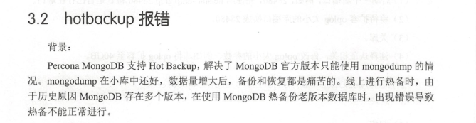
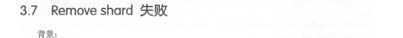
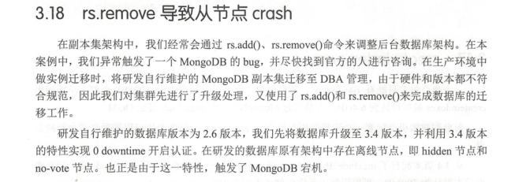
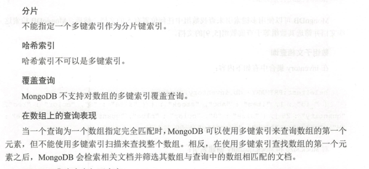
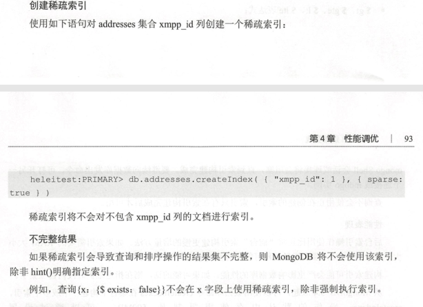
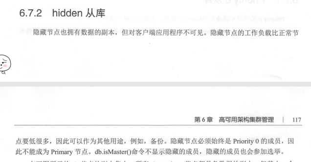

1 mongodb 3.4新特性
1.1 复制集
Default Journaling Behavior of majority Write Concern
Adjustable Catchup Period for Newly Elected Primary
支持 Linearizable Read Concern
Improved Initial Sync
Decimal Type
Collation and Case-insensitive Indexes

安全提升
工具
1.2 分片集群
Membership Awareness
Balancer on Config Server Primary
Faster Balancing
不在支持SCCC Config Server模式
Sharding Zones
2 mongodb 3.6新特性
Default Bind to Localhost
Authentication Restrictions
Change Streams
Causal Consistency
Retryable Writes
serverStatus
2.1 复制集
2.2 分片集群
3 运维实战 故障案例分析
3.1 调整oplog大小引发从库宕机
3.2 hotbackup报错

3.3 MongoDB最大连接数限制
3.4 MongoDB启动失败
3.5 Mongos 异常宕机
3.6 sharding集群执行sh.stopBalancer()命令卡住
3.7 Remove shard失败

3.8 move chunk aborted
3.9 迁移引发的性能抖动
3.10 Mongos连接数异常
3.11 rs.add时报错operation exceeded time limit
3.12 副本集延迟突然增大到上万秒
3.13 升级发现Info Message异常
3.14 对已存在的集合shardcollection失败
3.15 operation exceeded time limit
3.16 强制重新配置副本集
3.17 create index oom
3.18 rs.remove导致从节点crash

4 性能调优
4.1 机器负载高
4.2 快速修改库名
4.3 dbhash检查一致性
4.4 使用索引却依旧性能低下
4.5 索引
4.5.1 单列索引
单个字段创建升序索引
在嵌入字段上创建索引
在嵌入式文档上创建索引
4.5.2 复合索引
4.5.3 多键索引
索引界限
多键唯一索引
限制
分片&哈希索引&覆盖查询&在数组上的查询表现

4.5.4 文本索引
4.5.5 2dshpere索引
4.5.6 2d索引
4.5.7 Hash索引
4.5.8 一条SQL创建多个索引
4.6 属性索引
4.6.1 TTL索引
4.6.2 唯一索引
4.6.3 部分索引
4.6.4 稀疏索引
创建稀疏索引&不完整结果

稀疏符合索引&稀疏唯一索引
4.7 在大集合上创建索引
4.8 索引交集
4.9 索引排序
4.10 查询计划
4.11 system profile

4.12 Profile操作相关
5 备份与恢复
5.1 逻辑备份
5.2 Oplog Replay
5.3 物理备份
6 高可用架构集群管理
6.1 副本集
6.1.1 冗余和数据可用性
6.1.2 MongoDB中的副本集

6.1.3 自动故障转移
6.1.4 关于MongoDB的读操作
6.2 副本集成员状态
6.3 副本集原理
6.4 复制集成员
6.5 复制集成员类型
Arbiter
Vote0
Hidden
Delayed
副本集rollback过程
6.6 副本集中的主库
6.7 副本集中的从库
6.7.1 Priority 0从库

6.7.2 hidden从库

6.7.3 延迟从库
6.8 oplog简介

6.9 oplog过滤
6.10 副本集的数据复制
6.11 3节点最小副本集架构
Primary+2Secondary架构
Primary+Secondary+Arbiter架构

6.12 副本集的选举
选举
非投票节点
6.12.1 writeConcern
6.12.2 Read Preference
6.13 副本集环境搭建
6.14 配置延迟
6.15 从2.6升级到3.0版本
6.15.1 升级过程
6.15.2 关于认证
6.15.3 变更存储引擎
6.15.4 Dricver兼容性
6.16 从3.2版本升级至3.4版本
6.16.1 升级过程
6.16.2 启用不向下兼容3.4版本功能
6.16.3 升级发现infoMessage异常
6.17 分片
ShardKeys
Chunks
6.17.1 分片和非分片集合

连接到分片集群

分片策略
Shard集群中的zone
6.17.2 Sharding组建
6.17.3 Shard
Primary Shard
shard status
6.17.4 Config Server
Reploca Set Config Servers
Config Server 上的读写操作
config server的可用性
Sharded Cluster Metadata
6.17.5 mongos
mongos的路由和结果
mongos如何处理查询模型
6.17.6 Shard Keys
指定shard key
shard key index
unique index
选择一个shard key
shard key的基数
shard key的频率
shard key单调递增或递减
6.17.7 哈希分片
Hash sharding key

将集合进行Hash分片
6.17.8 范围分片

6.17.9 Zone

zone功能体现&balancer&shardkey
6.17.10 zone常用命令
6.17.11 Chunk
Chunk Split
Chunk迁移& balancer

6.17.12 Chunk迁移

6.17.13 chunksize
6.17.14 Balancer
6.17.15 Balancer运维
6.18 Troubleshoot Sharded Clusters

6.19 在线开启认证
6.20 分片搭建
7 监控
7.1 PMM监控MongoDB
7.2 Server组件
7.3 客户端组件
8 常用指令
8.1 查询
8.2 插入
8.3 修改
8.4 删除
8.5 分片集群常用命令